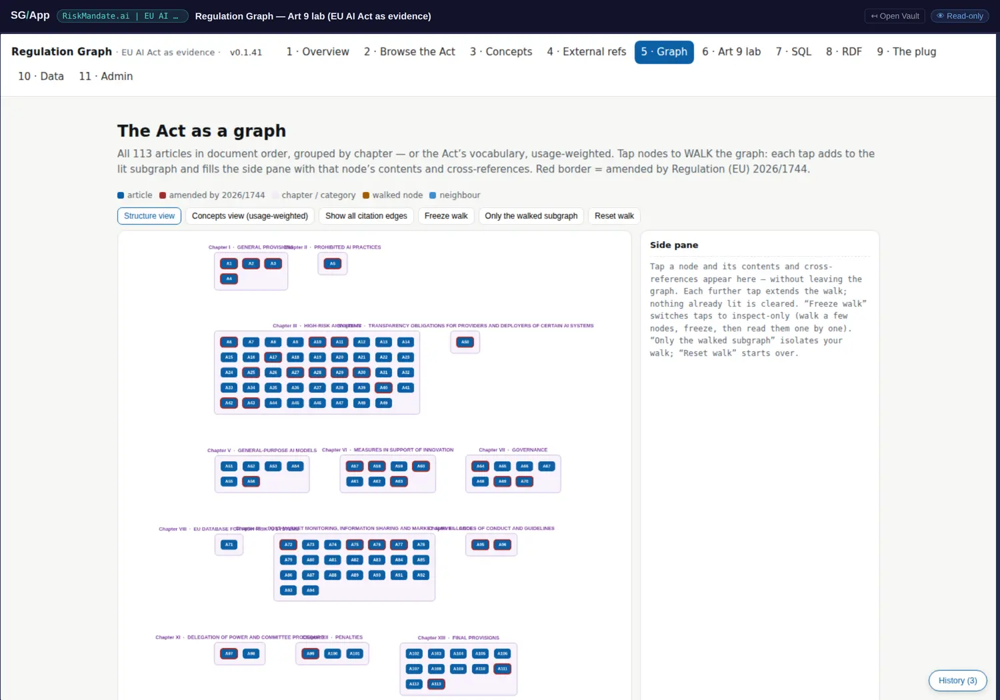

The query engines, and what they settle
This page exists to close a correction. In review r001 the founder said the book's claim that "we don't use databases" overstates it: what is true is that there are no live databases, while ephemeral engines are used deliberately — and the review recorded a need to open the vaults and attribute the query capabilities precisely before any wording changed. That verification is done, and this is it.
Eleven views, and what each engine is
Behind the top navigation of this vault sit eleven views. Four of them are engines in the sense that matters here:
| View | The engine | What it is, precisely |
|---|---|---|
| SQL | SQLite compiled to WebAssembly (sql.js) | In memory, with preset and free-form queries. Loaded on demand in the reader's browser, discarded when the tab closes. There is no server, no persisted database file, and nothing is written back to the vault. |
| RDF | rdflib | Partition-separated predicates with Turtle export. The graph can be handed to somebody else in a standard serialisation without the meaning having been stored in that serialisation. |
| Graph | Cytoscape | The citation graph at article level, with amendment halos and aggregated citations. |
| Concepts / External refs | the vault's own traversals | The Act's 68 defined terms with every usage linked; and every other EU instrument the Act cites, as an in-vault citation graph. |
All of it runs client-side over the SG bridge, and the vault is never written by the app. The pattern is the same one the source repository's own brief calls the browser is the database: the file system is the source of truth, and a query engine is something you spin up over it and throw away.

What this settles, and the wording it supports
The book currently states, in chapter 12 and on the front page, that there is no browser SPARQL or Cypher and no RDF or JSON-LD in the code. Read as a statement about the source repository's codebase, that remains true and should stay. Read as a description of the work as a reader experiences it, it is misleading, because a published vault in the same estate ships an in-browser SQL engine and an RDF serialisation with Turtle export.
Both halves are now verifiable, so the correction can be precise instead of hedged. The wording this analysis supports, offered for agreement rather than applied:
There is no live, persistent graph database anywhere in this work, and none of the semantic layer described here runs against one. Ephemeral engines are used deliberately: the Regulation Graph vault loads SQLite into the browser through WebAssembly and serialises RDF with Turtle export, both client-side, both discarded when the tab closes, over a file system that remains the source of truth. The claim is about where the data lives, not about which tools are allowed to touch it.
One precision that survives unchanged and should be kept: MGraph-DB is not a dependency. The source repository's only import is a vendored benchmark that CI never runs, and the Issues-FS estate independently publishes the same correction about its own READMEs. The honesty table's line stays true as written.
Why ephemerality is the argument, not an excuse
It would be easy to read this correction as a retreat — the book said no databases, and it turns out there are some. It is the opposite. A live graph database is a second source of truth that has to be kept in step with the first, and every argument in this book about drift, provenance and supersession gets harder the moment one exists. An engine that is loaded on demand from files and thrown away cannot drift from them, because it has no state of its own to drift with.
That is why the corrected claim is stronger than the absolute one. "We use no databases" is a purity statement and invites a gotcha. "The file system is the source of truth and query engines are disposable instruments over it" is an architectural position, it is falsifiable, and this vault is the instance that makes it checkable.
- The correction itself (review r001 item 5): the verification need is met, the engines are attributed by name and view, and proposed wording is on the record awaiting agreement.
- Chapter 12's honesty table gains a precise line rather than an absolute one, and keeps the MGraph-DB line unchanged.
- Chapter 7 can name what the regulation vault's eleven views actually are, rather than listing them as a count.
- Chapter 1 (why graphs at all) gains support for its RDF position, "both, at different layers": here is a vault that exports Turtle without having put the meaning in RDF.